Page 1 / 原始页码 135
第 3 篇
生物能学
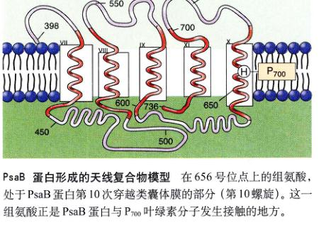
蛋白质怎样协助叶绿素进行光合作用
近几年来公众的注意力都集中在尖端学科——人类基因组计划、基因工程以及对抗人类获得性免疫缺陷综合征(AIDS)和癌症的研究——所取得的令人瞩目的进展。与此同时，生物学的其他领域也悄然取得了巨大进步。在过去十年中最为辉煌的成就之一，是揭示了光合作用的机制。
在光合作用中，叶绿素分子吸收光子，光子贡献出一个高能电子用来产生 NADPH，并利用质子泵制造 ATP。当进一步研究进行光合作用的吸光叶绿素后，研究者发现叶绿素有规律地组成许多个功能单位，即光系统，蛋白质和辅助色素在其中起支持作用。在一个光系统中，几百个叶绿素分子像天线一样，接受光照并把获取的能量传递给一个作为反应中心的特化叶绿素分子，这个分子作为光作用最初始的电子供体，一旦它释放出光照激发的高能电子，称之为光合作用的一系列化学反应应便开始了，并且好像被推倒的多米诺骨牌一样难以停止。
植物有两套光系统共同工作来获取光能。其中称为光系统 I 的是较简单的一种，类似于光合细菌中的光系统，并被认为是从而者进化而来的。
光系统 I 一直是人们感兴趣的研究对象。在它的反应中心，一对叶绿素分子负责捕获光能，然后将受激电子传给反应中心外的电子受体。这一步完成了能量从叶绿素的转移，是光能到化学能的转化——光合作用最核心的部分。
因为在光系统 I 反应中心的那对叶绿素分子对光的吸收峰位于 700nm，它们又叫做 P700。P700 二聚体由两个互有联系的蛋白质分子充当支架，固定在光系统中，近 10 年前才发现这些蛋白质在光合过程中起关键作用。它们在叶绿体的内膜上来回穿透达 11 次，形成一个分子框架固定住 P700，以及与之联系的、吸收光能的叶绿素分子，以及把受激发的电子传递给光系统外的外分体分子。
最近的研究显示，这两被称为 PsaA 和 PsaB 的支架蛋白质的作用，比单纯提供被动的支持要活跃得多。
PsaB 蛋白形成的天线复合物模型 在 656 号位点上的组氨酸，处于 PsaB 蛋白第 10 次穿越类囊体膜的部分（第 10 螺旋）。这一组氨酸正是 PsaB 蛋白与 P700 叶绿素分子发生接触的地方。
1995年对于高度纯化的光系统分析，揭示了 P700 二聚体两个亚基的电荷分布是高度不对称的——其中一个叶绿素分子显示出比另一个高得多的电荷密度。在两个叶绿素分子本身完全相同的情况下，这意味着 PsaA 和 PsaB 蛋白质主动参与了对于叶绿素物理化学性质的调控。
蛋白质是用什么手段实现这种调控的？它们对叶绿素分子“做”了什么？为了进一步研究究竟发生了什么，必须先知道应该研究该蛋白质的哪一部分。弄清这一点的方法之一是将叶绿体中 PsaA 和 PsaB 的氨基酸序列与细菌光系统中同样的分子进行比较，由于前两种分子据信是从后者进化而来的，所以在序列中重要的部分应该得以保留，应该在 3 种分子中都会出现。
有几段序列确实是保守的，它们中的大部分并直接与叶绿素接触，但另外有一段很可能是我们要找的部分——在第 10 螺旋区（PsaB 分子第 10 次穿过类囊体膜的部分）的一个氨基酸，标记是 His 656，在所有序列中是保守的，同时正位于 PsaB 接触 P700 叶绿素分子的地方。这一氨基酸（组氨酸）成为了最近研究蛋白质如何协助叶绿素进行光合作用的焦点。
相关实验
为了确定 His 656 以及 PsaB 中第 10 螺旋的重要性，亚利桑那州立大学的安德鲁·韦伯 (Andrew Webber) 教授和他领导的研究小组与柏林科技大学沃尔夫冈·卢比西 (Wolfgang Lubitz) 的研究小组，对光合原生生物莱氏衣藻 (C.reinhardtii) 的 His 656 进行定点突变。由于实验易操作，莱氏衣藻是研究光合作用应用最多的一种材料。
Page 2 / 原始页码 136
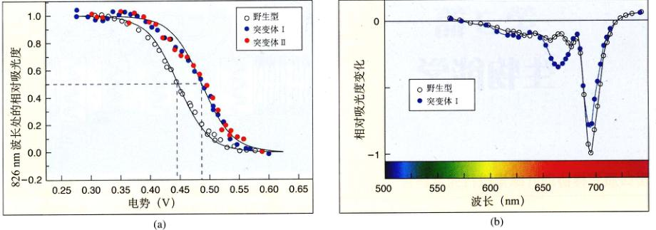
改变第 656 位点氨基酸的效应 (a) 当 P700 叶绿素分子分别与正常和变异 PsaB 蛋白作用时，其氧化中点电势分别是 (447 ± 6) mV 和 (487 ± 6) mV，变异类型的值要高出约 40 mV。(b) P700 与突变体作用时，其吸收光带（吸收曲线上的凹陷）发生蓝移（向左），在 667nm 处出现新的吸收带。
研究者用其他不同的氨基酸置换了 PsaB 第 656 号位点的氨基酸，来观察这个变化对光合作用的影响。如果 His 656 的确对 P700 叶绿素分子的修饰起关键作用，那么这一位置的氨基酸变化应该产生深刻的影响。
1) 产生 656 号位点突变的 PsaB
韦伯的实验步骤中第一步也是关键的一步，是改变莱氏衣藻的叶绿体的基因，在 PsaB 基因的 His 656 位点上引入突变。为了做到这一点，科研小组利用基因定点突变技术构建了 pHN (B656) 和 pHS (B656) 两种质粒，在原编码组氨酸的位置分别插入编码丝氨酸和天冬氨酸的核苷酸。而后，这两种带有变异的质粒被克隆到莱氏衣藻中，分离出带有变异质粒的细胞后，再利用 DNA 测序来证实变异基因的存在。
2) 鉴定 PsaB 656 号位点突变的影响
一旦研究者证实莱氏衣藻叶绿体的 DNA 包含了变异的 PsaB 基因，他们便着手检测变异后的 PsaB 蛋白在调控 P700 方面的作用，检验从叶绿体内分离的类囊体膜。研究者测量了 P700 复合体的氧化中点电势——一个反映叶绿体分子束缚电子紧密程度的指标。
研究者通过测量 P700 复合体突变前后的吸光度变化，进一步对它进行了鉴定，分析突变是否改变了 P700 叶绿素分子的光谱特性。
实验结果
测量氧化中点电势的实验结果表明，PsaB 蛋白对 P700 的影响在突变后完全改变了。经测定，P700 的中点电势在野生型是 (447 ± 6) mV，而在变异 I HN (B656) 和变异 II HS (B656) (图 a) 中，增加到了 (487 ± 6) mV。这个约 40mV 的电位升高，意味着组氨酸的突变显著改变了 P700 的氧化还原特性，同时也说明了其 His 656 与 P700 二聚体中的一个叶绿素分子有紧密的相互作用。
这些实验结果以及得出的结论，被野生型和突变型间的光谱性质差别进一步证实 (图 b)。PsaB 突变体中，原来位于 696 nm 处的吸收光带（对光有强烈的吸收）减弱，并发生稍许的蓝移（在光谱带中移向蓝色一侧），新的吸收光带出现在 667 nm 处。光谱性质的这两个变化，都是由 PsaB 蛋白的基因突变引起的。
最终，研究者得出结论，PsaB 的 His 656 直接调控 P700 两个叶绿素分子之一的中心镁原子，他们的研究结果与先前提出的光系统 I 的一种模型吻合。这个模型中，PsaB 的前 6 个穿越膜的片段组成一个天线区域，接受来自其他叶绿素分子的能量；后 5 个跨膜片段与 P700 反应中心相互作用。
Page 3 / 原始页码 137
第 8 章
能量和代谢
图 8.1 正在午餐的狮子 这只狮子从长颈鹿获得能量，可以供它各项生命活动。
生命可以看作是一个恒定的能量流，生物体进行生命活动引导了能量流的形成。我们用来定义生命的所有显著特征——有序性、生长现象、繁殖能力、应激性和内部的调控作用——都需要恒定的能量提供 (图 8.1)。一旦能量来源被剥夺，生命也就停止了。因此，脱离了生物能学将不可能对生命世界有完整的认识。生物能学旨在分析能量如何为生命系统的各种活动提供动力。本章将集中讨论能量是什么以及生物体如何获取、储存和利用能量。
Page 4 / 原始页码 138
8.1 热力学定律描述了能量的转换
8.1.1 生物体内能量的流动
能量被定义为做功的能力。可以认为它以两种状态存在：动能 (kinetic energy) 反映运动的能量（图 8.2），运动物体能使其他物质运动而做功；势能 (potential energy) 是蕴藏的能量，并不在运动，但有这种能力的物体具有势能。停在山顶上的大石块就具有势能，当它滚下来的时候，其中一些势能就转化为动能。生物体内大部分做功的过程涉及势能到动能的转化。
能量可以有很多种形式：机械能、热量、声音、电流、光或者放射线。因为能量可以以如此多种形式存在，所以有很多测量能量的方法。最方便的方法是通过热量，因为所有其他形式的能量都可以转化为热。实际上，热力学的研究也称为热力学 (thermodynamics)，意指热能变化。生物学常通过的热量单位是千卡 (kcal)。一千卡等于 1000 卡路里 (cal)，1 卡路里是使 1 克水升高 1 摄氏度 (°C) 所需的热量。（注意不要把卡路里与食物与营养有关的大卡搞混，大卡的英文单词与卡路里的是它的首字母 C 大写，它实际上是千卡的另一种形式。）另一种通常用于物理中的能量单位是焦耳 (Joule, J)，1 焦耳等于 0.239 卡路里。
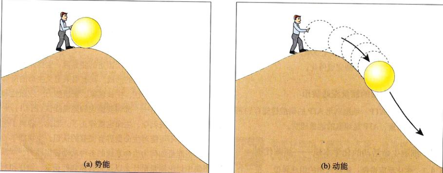
图 8.2 势能和动能 (a) 具有运动能力但并不在运动的物体具有势能。将球搬到山顶花去的能量被作为势能储存起来。(b) 运动中的物体具有动能。球滚下山时，储存的能量作为动能被释放出来。
1) 氧化-还原
能量由太阳进入生物界，它以恒定的光线照射在地球上。据估计，太阳每年提供给地球超过 54.4 × 10²³ J (13 × 10²³ cal) 的能量，也就是每秒 1.7 × 10¹⁶ J (4.0 × 10¹⁶ cal)。植物、藻类和某些种类的细菌，利用光合作用获取其中一部分能量。在光合作用中，从太阳光得到的能量，用来把小分子（水和二氧化碳）化合成复杂的分子——糖，能量以势能的形式储存在糖分子中原子间的共价键上。
第2章曾讲过，原子由一个中央的原子核和围绕在外层轨道的一个或多个电子组成。共价键是原子核通过公用它们的电子形成的，断开这种键必须提供把两个原子核拉开的能量，实际上共价键的强度正是以断开它所需要的能量来衡量的。比方说，断开 1 摩尔 (6.023 × 10²³) 碳氢键 (C—H) 需要 443 kJ (98.8 kcal) 的能量。
在一个化学反应中，储存在化学键中的能量可以传给新的化学键。在其中一些反应中，电子实际上是由一个原子或分子传到另一个原子或分子。当一个原子或分子失去一个电子的时候，就说它被氧化 (oxidized) 了，这一过程称为氧化反应 (oxidation)。这一命名反映了在生命系统中，具有强烈吸引电子能力的氧气是最普遍的电子受体这一事实。反之，当一个原子或分子得到电子时，就称它被还原 (reduced) 了，这一过程称为还原反应 (reduction)。氧化与还原总是在一起发生，因为一个原子经过氧化反应失去的电子，必然要通过还原反应被别的某个原子得到，因此，这类化学反应称为氧化-还原反应 (oxidation-reduction reaction) (图 8.3)。通过氧化-还原反应，能量从一个分子传递给另一个分子，所以一个分子的还原态比它的氧化态具有更高的能级 (图 8.4)。
氧化-还原反应对于生命系统的能量流动起到关键作用，因为在原子间传递的电子携带者能量。一个电子能量的多少，取决于电子离核的远近和原子核吸引它的强烈程度。光（以及其他形式的能量）可以给电子以附加能量。
Page 5 / 原始页码 139
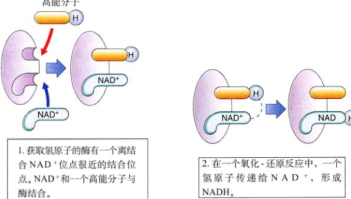
图 8.3 氧化-还原反应 细胞利用 NAD+ 进行氧化还原反应，高能电子常和一个质子结合成氢原子，得到高能电子的分子称为被还原，而失去电子的分子称为被氧化。NAD+ 通过获取高能分子的氢原子（在图上流程是 1→2→3）将它们氧化，然后将这些质子传递给还原的分子（在图上流程是 3→2→1）。
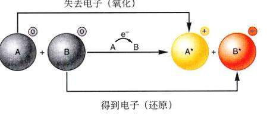
图 8.4 氧化-还原反应 氧化是失去电子的过程，还原是得到电子的过程。在上图中，A 分子和 B 分子的电荷显示在右上角的圆圈中。A 分子在失去电子的同时失去能量，而 B 分子从得到电子的过程中获得能量。
能量，把它激发到更高的能级。当这一电子脱离一个原子（氧化反应）移动到另一个原子（还原反应）时，电子的附加能量也跟随者一起移动，电子就载着更高的轨道围绕新的原子核运动。这一附加能量作为化学势能储存起来，当电子回到原来的能级时被释放出来。
能量就是做功的能力，无论是现行的（动能）还是储存起来以备后用的（势能）。能量伴随着电子而传递，氧化反应是失去电子，还原反应是得到电子。
8.1.2 热力学定律
奔跑、思考、歌唱、阅读和阅读这些文字——所有上述生命活动都涉及能量的转换。一套我们称为热力学定律的自然法则普遍适用于宇宙间所有的能量转换，大到核反应，小到蜜蜂的嗡嗡叫。
1) 热力学第一定律
热力学第一定律 (First Law of Thermodynamics)，是关于宇宙中能量多少的。它宣称能量不能被创造也不能被消灭，它只能从一种形式转化为另一种形式（比如从势能转化为动能），宇宙间能量的总量保持守恒。
图 8.1 中那只大口嚼着长颈鹿的狮子正在获取能量。与创造能量或利用太阳光能不同，狮子只是将蕴藏在长颈鹿组织中的部分能量转移到自身体内（正如长颈鹿也是靠获取它食用的植物中储存的势能来维持生命一样）。
在任何生物体内，这一化学能可以转移到其他分子以及不同的化学键中，也可以转化为别的形式，比如动能、光能或电能。在每次转化中，总有些能量以热的形式散发到环境中。热是分子无规则运动的量度（因此这也另一种形式的动能）。能量持续地在生物界单向流动，以热的形式散失的能量，由不断进入生态系统的太阳能来补充。
有热量梯度的存在时，热才能用来做功，也就是说两处之间必须有温度差（这就是蒸汽机的工作原理）。小小的细胞内不可能容忍足够大的温度差，所以细胞不能利用热来做功。因此，虽然宇宙的总能量守恒，但能用来做功的能量越来越少，能量渐渐地作为热散失了。
Page 6 / 原始页码 140

图 8.5 现实中的熵 随着时间的推移，一个孩子的房间变得越来越乱，整理好需要花费工夫。
“混乱”是自发产生的
有序需要能量的提供
2) 热力学第二定律
热力学第二定律 (Second Law of Thermodynamics) 是关于势能向热或者说是无规则分子运动的转换，它提出宇宙的无序性（正式说法叫熵）是不断增加的。简单地说，就是无序比有序更容易产生。举个例子，整齐竖立的一摞砖头很容易翻倒而变得乱七八糟，而杂乱摆放的一堆砖头却很难堆成整齐的一摞。总的来说，能量的转化促使物质从有序而不稳定的状态自发地变成稳定而无序的状态 (图 8.5)。
3) 熵
熵 (entropy) 是系统无序性的量度，所以热力学第二定律可简单地表述为“熵增原理”。当宇宙刚形成时候，它具有能够够拥有的所有势能，伴随着能量转化中熵的持续增加，无序性在不断地增长。
热力学第一定律描述能量既不能被创造也不能被消灭，它只能从一种形式转化为另一种形式。第二定律描述宇宙的无序性（熵）是持续增加的，伴随着被利用越来越多的能量转化为热——分子无规则运动的动能。
8.1.3 自由能
折断分子内原子间的化学键要消耗能量。热能，由于加剧了分子内原子运动，使这一过程容易进行。化学键和热量对一个分子都有重要的影响，前者在降低无序性而后增加无序性，二者的总效果，即实际能够用来断开旧化学键，并接着形成新化学键的能量称作分子的自由能 (free energy)。更广义上讲，自由能定义为一个系统中能够用来做功的能量。在细胞内，压力和体积可认为不变，自由能表示成符号 G（代表“吉布斯 (Gibbs) 自由能”，研究的系统限于细胞内）。G 等于分子中化学键蕴藏的能量（称作焓 enthalpy，符号是 H）减去无序性（称作熵，符号 S）和绝对温度了开氏温度（K = °C + 273）的乘积，后一部分是无法获得的能量：
G = H - TS
化学反应是断开反应物的某些化学键，并形成产物中化学键的过程。反应结果造成自由能的改变。当一个化学反应在恒定的温度、压力和体积的条件下发生时（即多数生化反应的反应环境）自由能变化 (ΔG) 可简单表示为
ΔG = ΔH - TΔS
自由能 G 的变化量 ΔG 是化学反应的基本特征参数。
在有些反应中，ΔG 是正的，这意味着反应的生成物比反应物具有更高的自由能。说明生成物化学键中的能量 (H) 升高或无序性 (S) 降低，它们需要吸收能量，所以这样的反应不能自发发生。任何需要吸收外界能量的反应称为吸能反应 (endergonic reaction) (吸收能量)。
Page 7 / 原始页码 141
在另外的反应中，ΔG 是负的，生成物具有较反应物低的自由能，或者是化学键中的能量降低低或无序性升高，或者二者兼备。如果反应物与产物之间无序性的差异 (TΔS) 大于焓的差异，这样的反应会自发发生。会自发发生并不意味着反应立刻就能完成，一个自发反应也可能进程缓慢。这些反应将多余的自由能作为热释放，所以被称为放能反应 (exergonic reaction) (放出能量)。图 8.6 归纳了这两种反应。
自由能是可用来做功的能量。在细胞内，自由能的变化是生成物和反应物的键能之差减去系统无序性的变化 (TΔS)。任何生成物比反应物具有更低自由能 (ΔG 是负的) 的反应能自发发生。
8.1.4 活化能
既然能够释放自由能的反应倾向于自发发生，那么为什么这些反应并非都已发生呢？原因之一是大部分反应需要吸收用来引发反应的能量。在形成新的化学键前，首先必须断开已存在的化学键，即使旧键中只含少量能量，断开它也需要消耗能量，用来削弱旧键从而引发化
学反应的能量称为活化能 (activation energy) (图 8.7a)。
一个放能反应的反应速率，取决于所需活化能的大小。需要的活化能越大，反应进行得越慢，因为活化能越大，意味着更少的分子能成功越过能垒。活化能并不是固定的常量，对特定的化学键施加应力，会使其更易断裂。用降低引发反应活化能的方式来影响化学键的过程叫做催化 (catalysis)，能完成这一过程的物质就是我们所知的催化剂 (图 8.7b)。
催化剂仍然要遵循热力学的基本定律，比如它们不能使吸能反应自发发生。通过降低活化能，催化剂使正反应和逆反应速率增加相同的倍数，因此它不会改变反应最终转化的生成物的比例。
为了理解催化的作用，我们假设一个保龄球处于山坡上的一个浅浅的凹陷处，只有一道窄窄的土石坎挡在球下，以防止其滚落。如果挖平凹陷的边缘，保龄球会自动滚下，但绝不会自己滚上山顶！挖平凹陷的作用，只是使其能够自由运动，重力才是决定它运动方向的根本因素。这种由球在山上的位置所决定的运动，可以通过降低气球运动的阻力而加速。
类似地，化学反应进行的方向也仅仅取决于自由能的差值。就好像挖走保龄球下的泥土一样，催化剂降低了阻止反应进行的能垒，它对吸能反应没有帮助，如同挖走泥土并不能使球滚上山一样。只有放能反应才能自发进行。
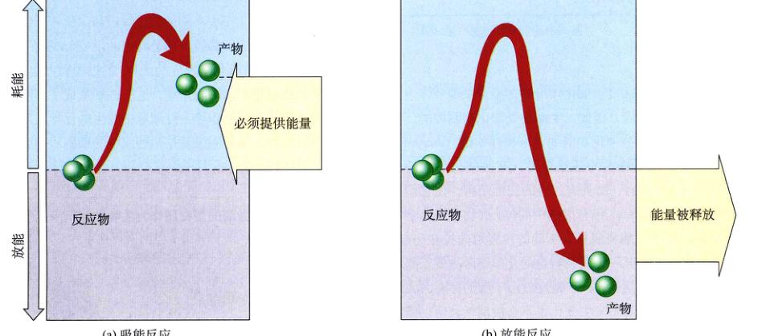
图 8.6 化学反应中的能量 (a) 在吸能反应中，产物比反应物能量要高，使反应进行必须提供额外的能量。(b) 在放能反应中，产物比反应物包含的能量少，多余的能量被释放。
Page 8 / 原始页码 142
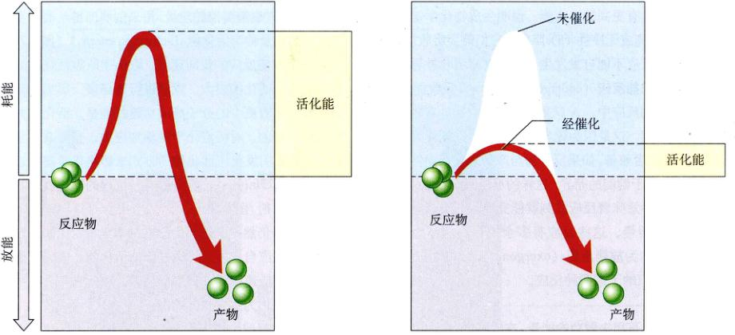
图 8.7 活化能和催化 (a) 放能反应并不一定迅速进行，这是因为必须先提供能量来拆开原有的化学键，这一额外的能量就是反应的活化能。(b) 催化剂依靠降低引发化学反应的活化能，来催化特定的反应。
发生，催化剂永远不能改变这一点。催化剂所能做的，只是使一个化学反应进行得更快而已。
反应的速度取决于所需的活化能。催化剂降低活化能从而加快反应速度，但不能改变最终反应物和生成物的比例。
8.2 酶是生物催化剂
8.2.1 酶
生物依靠控制发生催化作用的转换点来调节体内发生的生物化学反应，因此，生命是受催化剂调控的。执行生物体内大部分催化功能的是一种叫做酶 (enzyme) 的蛋白质（越来越多的证据表明，某些催化反应是由 RNA 分子完成的）。酶具有独特的三维结构，使它能稳定与底物 (substrate) 结合成的中间体。底物就是将会参与反应的分子，酶将底物以正确的位置取向拉在一起，或者作用于其中某一个底物特定的化学键等方式，降低形成新键所需的活化能，于是反应由于酶的存在大大加快了。由于酶自身不发生变化也不会被消耗，所以需要的酶量极小而且可以反复利用。
让我们以 CO₂ 和 H₂O 反应形成 H₂CO₃ 为例来说明酶是怎样工作的。这一重要的酶促反应发生在所有脊椎动物的红细胞中：
CO₂ + H₂O = H₂CO₃
这一反应可以向任何一个方向发生，但因为它的活化能很大，这一反应在没有酶存在下进行得很慢，一个细胞中一小时只生成 200 个碳酸分子，如此缓慢的反应对于细胞几乎没有意义。细胞利用了细胞质中的碳酸酐酶 (carbonic anhydrase，酶的英文名常从 "-ase" 结尾) 来解决这一问题，在其他条件相同但有碳酸酐酶存在的情况下，大约每秒就有 600 000 个碳酸分子生成！这样，酶把反应速度提高了 1000 万倍以上。
现在知道有几千种不同的酶，每一 种酶催化一个或几个具体的化学反应。酶通过加速特定的反应，决定了细胞内新陈代谢（所有化学反应的统称）的过程和方向。不同种类的细胞有不同的酶系统，这一区别造成了不同种类细胞结构和功能的差异。红细胞中发生的化学反应不同于神经细胞，部分原因就是两种细胞的细胞质和膜中分布的酶不同。
细胞利用叫做酶的蛋白质作为生物催化剂来降低反应的活化能。
8.2.2 酶的作用机制
大多数酶是球蛋白，表面有一个或多个袋状或缝状凹陷，这一部位称为活性部位 (active site) (图 8.8)。底物与酶的活性部位结合，形成酶底物复合物 (enzyme-substrate complex)。只有底物分子与活性部位精确地模...
Page 9 / 原始页码 143
合，催化反应才可能在复合体内发生。这时酶中某些氨基酸的侧链基团与底物分子的某些基团很接近，这些侧链基团与底物发生化学作用，通常挤压或扭曲某个化学键，结果降低了以断键的活化能。这时底物转化为产物，并从酶分子上脱离。
蛋白质并不是刚性的，底物的结合会诱使酶的构象发生微小的改变，产生酶和底物间更好地“诱导契合” (induced fit) (图 8.9)。这一相互作用有利于酶对于其他底物的结合，在这种情况下，底物自身促进酶来接受别的底物。
因为酶对底物的选择具有专一性，所以典型的酶只催化一个或相似的几个反应。这个专一性来源于酶的活性部位，只有特定的底物分子才能与之结合。
8.2.3 酶有多种形式
许多酶游离于细胞质中，可以自由移动而不与任何结构连在一起。其他一些酶作为某些细胞结构或细胞器整体的一部分来起作用。
1) 多酶复合物
细胞中，一些分别催化一连串序列反应中不同步骤的酶，常以非共价键松散地结合在一起，这就形成了多酶复合物 (multienzyme complex)。图 8.10 中细菌的丙酮酸脱氢酶复合物，包含了催化氧化代谢中 3 个连续反应的酶——一个复合体中共有 60 个这 3 种酶蛋白的亚单位。这些亚单位协同工作，像一个微型工厂。多酶复合物在提高催化效率上有许多优势：
(1) 任何酶促反应的速率都受到酶与底物碰撞几率的制约。如果一系列连续的反应发生在多酶复合物的内部，上一步反应的产物会直接被送到下一个酶那里，以避免因释放扩散而造成的扩散。
(2) 由于反应的底物在整个系列反应过程中都不离开复合体，这就消除了发生副反应的可能性。
(3) 所有发生在复合体内部的反应可以作为一个整体来被控制。
除了控制 Krebs 循环入口的丙酮酸脱氢酶外，其他一些细胞中关键的反应过程也是由多酶复合物控制。
催化作用：碳酸酐酶的作用机制
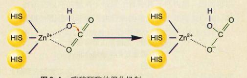
图 8.A 碳酸酐酶的催化机制
碳酸酐酶是人体内作用最快的酶之一，它将溶解的 CO₂ 转化为碳酸，碳酸然后再离解为碳酸氢根离子和氢离子：
CO₂ + H₂O → H₂CO₃ → HCO₃⁻ + H⁺
这个酶在血液中起关键作用。血液中至少 70% 的 CO₂ 以碳酸氢根离子的形式运输。这一反应是放能的，但所需的活化能相当惊人，所以很少会自发产生碳酸氢根离子。然而，若有碳酸酐酶存在，反应速度却可提高 1000 万倍以上。
碳酸酐酶是如何有效地催化这个反应的呢？其活性部位是一个狭窄的裂缝，像是牙切开的一样。在狭缝的深处距表面大约 1.5nm 的地方，3 个组氨酸的咪唑基团（氮环）都朝向狭缝中心的同一位置，它们一起将一个锌离子紧紧固定住。这个锌离子就是催化作用的利器。
下面介绍锌如何起催化作用。在狭缝中紧靠锌原子的是一组识别和结合二氧化碳的氨基酸。锌原子与二氧化碳分子发生相互作用，使其与狭缝处于同一平面内。同时，锌原子的结合水迅速电离成氢氧根离子，氢氧根的位置恰好使它去进攻二氧化碳，这样 HCO₃⁻ 就形成了——酶自身不会发生改变 (图 8.A)。
碳酸酐酶之所以能作为一种高效的催化剂，是因为它将两个反应的底物紧密地拉近到一起，并使它们的空间取向最有利于反应的发生。其他的酶还有别的催化机制，例如，许多酶利用带电的氨基酸残基使底物极化，或用负电氨基酸基团进攻特定的化学键。不管反应的具体细节如何，依靠酶特定的形状使底物获得精确的空间取向总是一个关键的环节。
Page 10 / 原始页码 144
其中研究得比较深入的一个是脂肪酸合成酶复合体，它负责催化二碳前体物质合成脂肪酸。在这个多酶复合物中，有 7 种不同的酶，每一步反应的中间产物在整个反应过程中都与复合体结合在一起。
2) 并非所有的生物催化剂都是蛋白质
就在几年前，许多生物教科书还有这样的陈述“酶是生命系统的催化剂”，这样的陈述是在没有得到足够验证的基础上做出的。正如我们在第4章中谈到的，Tom Cech 和他在科罗拉多大学的同事在1981年报道，某些牵涉到 RNA 的反应似乎是被细胞内 RNA 分子自身催化的，而不是任何的酶。这一早期发现，被最近几年发现的 RNA 分子起催化作用的例子进一步证实。这些 RNA 催化剂可以不严格地称为“核酶” (ribozyme)。像酶一样，它们极大地加快了特定生化反应的速率，并显示出对底物高度的专一性。
似乎至少有两类核酶：在分子内起催化作用的一类呈折叠结构，负责催化它们自身的反应；在分子外起作用的那一类，作用于别的分子而自身不发生变化。许多重要的细胞内反应都牵涉到小的 RNA 分子，包括切掉信使 RNA 上不需要的片段，为合成蛋白质准备核糖体和协助线粒体的 DNA 复制。在所有这些情况下，RNA 分子充当催化剂的可能性正在被积极地探索。很多时候，特别是在光合作用这一复杂过程中，似乎是酶和 RNA 共同起着催化作用。
作为一个信息分子，RNA 同时具有催化剂的能力，在生物起源中引起很大震动。它似乎为第4章中讨论生命的自然发生说时所遇到的“鸡与蛋谜题”提供了一个可能的答案。最先出现的是蛋白质还是核酸？现在看起来至少有可能 RNA 首先出现，并催化产生最初的蛋白质。
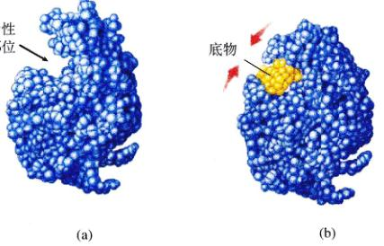
图 8.8 溶菌酶的工作机制 (a) 溶菌酶上一道贯穿的沟槽，正好适合组成细菌细胞壁的多糖（单糖构成的长链）的形状。(b) 当多糖长链（图中用黄色表示）进入沟槽后，诱使蛋自质的形状发生微小的改变并将底物包得更紧。这一诱导契合，使蛋白质中的一个谷氨酸残基的位置，正好挨近两个相邻单糖之间的糖苷键，谷氨酸通过从糖苷键夺取一个电子使其断裂。
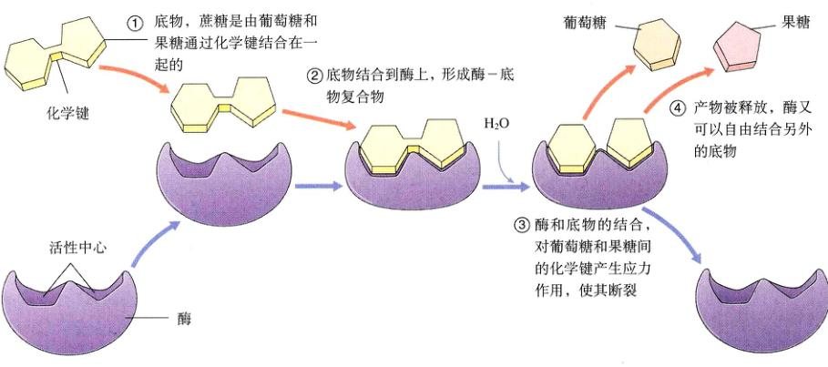
图 8.9 酶的催化循环过程 酶加快了它所催化反应的速率，而自身不发生改变。在此处展示的反应中，蔗糖酶将蔗糖分子（存在于大多数水果中）分解成两种简单的糖：葡萄糖和果糖。①首先，蔗糖底物结合到酶的活性中心，正好卡入其表面的凹陷处。②由于蔗糖与活性中心的结合而形成的酶-底物复合物，诱导酶改变了原来的形状，而与蔗糖结合得更紧。③活性中心的氨基酸残基因此而紧靠蔗糖中葡萄糖和果糖间的糖苷键，并使糖苷键断裂。④最后释放了葡萄糖和果糖这两个反应的终产物，再去结合另一分子的蔗糖，然后再再次重复这一催化过程。这个循环往复的过程可以表示为等式：E + S ↔ [ES] ↔ E + P (其中 E 代表酶，S 代表底物，ES 代表酶-底物复合物，P 代表产物)。
不是所有的生物催化剂都在细胞中自由移动。有一 些作为细胞结构的一部分，有一些甚至不是蛋白质。
Page 11 / 原始页码 145
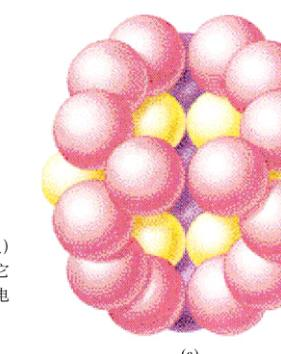
图 8.10 丙酮酸脱氢酶复合体 这种催化丙酮酸氧化的酶 (a, 模型) 是迄今所知最复杂的酶之一——它有 60 个亚基，其中大部分可以在电镜下观察到 (b)((200 000 ×))。
8.2.4 酶活性的影响因素
一个酶促反应的速度受到底物浓度的影响，同时也与催化此反应的酶有关。除此之外，任何会引起酶三维结构改变的物理化学因素——比如温度、pH、离子强度以及调节作用分子的结合——都影响到酶催化某个反应的能力。
1) 温度
对于无催化剂的反应，温度升高会加快反应速度，因为升温代表了分子无规则运动的加剧。酶促反应速度在达到一个叫最适温度 (temperature optimum) (图 8.11a) 的点之前，也是随温度升高而增加的。低于此温度时，稳定酶构象的氢键和疏水作用使酶不能非常自由地发生诱导契合，形成最有利反应发生的构象。超过最适温度之后，由于酶内部原子无规则运动的加剧，氢键和疏水作用无力再维持酶的稳定构象，酶会像第3章中讲的那样变性。人体大多数酶的最适温度在 35°C 到 40°C 之间，正常体温正好在这个范围内。生活在温泉中的细菌具有更耐热的酶（也就是使键维持构象的力更强），这些酶的最适温度可以达到 70°C，甚至更高。
2) pH
带有异种电荷的氨基酸残基，如谷氨酸 (-) 和赖氨酸 (+) 之间会产生离子相互作用，帮助维持酶构象的稳定。离子相互作用对于酶所处溶液的氢离子浓度十分敏感，这是因为改变氢离子浓度会使带有正负电荷的氨基酸之间的平衡发生移动。所以，大多数酶具有一个最适 pH (pH optimum)，这一值通常在 6 到 8 之间。有些蛋白酶能在很高的氢离子浓度下保持其三维构象，因而最适酸性很强环境能够执行酶的功能。比如胃蛋白酶，就可以在 pH 为 2 的酸性环境中消化蛋白质 (图 8.11b)。
3) 抑制剂和激活剂
酶的活性对于某些能够与之结合并引起自身构象变化的物质十分敏感，细胞就是通过这些物质来调节酶在特定时期的活性。这使细胞提高了整体工作的效率，同时能够在发育过程中控制其特征的变化。与酶结合降低其活性的物质称为抑制剂 (inhibitor)。很常见的一种情况是，一连串化学反应的终产物作为起始反应的抑制剂，称作反馈抑制 (feedback inhibition) 过程（这将在后面讨论）。
酶的抑制方式分为两类：竞争性抑制剂 (competitive inhibitor) 与底物竞争相同的结合位点，在酶上取代了部分底物分子；非竞争性抑制剂 (noncompetitive inhibitor) 与酶的活性部位以外的部位结合，改变了酶的构象使它不能再与底物结合 (图 8.12)。大多数非竞争性抑制剂与酶分子一个特定的部位结合，称为变构 (别构) 位点 (allosteric site，希腊语 allos 指“别的”，steros 指“形状”)，变构点充当化学开关的作用，与调节物的结合使酶在有活性与无活性两种构象间转换。与变构点结合而降低酶活性的物质叫做变构抑制剂 (allosteric inhibitor) (图 8.12 b)。
Page 12 / 原始页码 146
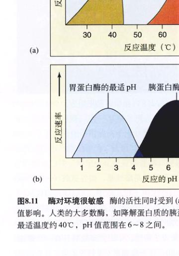
图 8.11 酶对环境很敏感 酶的活性同时受到 (a) 温度和 (b) pH 值影响。依此类推，激素活剂 (activator) 就是与变构点结合使酶保持活性构象，从而增强了酶的活性。大多数人体内的酶，如降解蛋白质的胰蛋白酶，作用的最适温度约 40°C，pH 值范围在 6~8 之间。
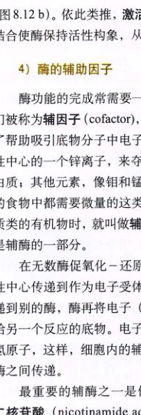
图 8.12 酶是怎样被抑制的 (a) 对于竞争性抑制，抑制剂与酶的活性中心发生作用。(b) 对于非竞争性抑制，抑制剂与酶活性中心以外的部位结合，引起酶的构象变化，使其不能再与底物结合。
4) 酶的辅助因子
酶功能的完成常需要一些另外的化学成分参与，它们被称勾辅助因子 (cofactor)，比如许多酶的活性中心包含了帮助吸引底物分子中电子的金属离子。羧肽酶利用活性中心的一个锌离子，来夺取肽键中的电子从而分解蛋白质；其他元素，像钼和锰也可以用作辅助因子。每天的食物中都需要微量的这类元素。当辅助因子是非蛋白质类的有机物时，就叫做辅酶 (coenzyme)。许多维生素是辅酶的一部分。
在无数酶促氧化-还原反应中，电子成对地由酶活性中心传递到作为电子受体的辅酶，辅酶接着将电子传递到别的酶，酶再将电子（连同电子携带的能量）释放给另一个反应的底物。电子对常与质子 (H⁺) 结合成氢原子，这样，细胞内的辅酶将能量以氢原子的形式在酶之间传递。
最重要的辅酶之一是作为氢受体的烟酰胺腺嘌呤二核苷酸 (nicotinamide adenine dinucleotide) (NAD⁺)。
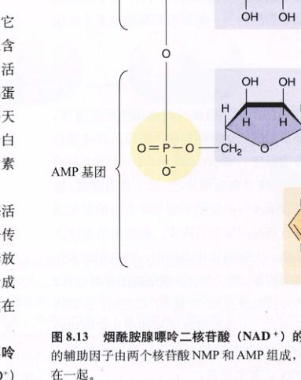
图 8.13 烟酰胺腺嘌呤二核苷酸 (NAD⁺) 的结构 这一关键的辅助因子由两个核苷酸 NMP 和 AMP 组成，二者头对头连接在一起。
Page 13 / 原始页码 147
(图 8.13)。NAD⁺ 分子由两个核苷酸分子结合在一起形成。核苷酸是一端连接一个或几个磷酸基，另一端连接含碱基的五碳糖。组成 NAD⁺ 的两个核苷酸分别是烟酰胺单核苷酸 (nicotinamide monophosphate) (NMP) 和腺嘌呤单核苷酸 (adenine monophosphate) (AMP)，由它们头部的磷酸基团连接在一起。二者在 NAD⁺ 分子中起不同的作用：AMP 为核心，它能够被许多酶识别；NMP 是分子的活性部分，提供了一个还原原性的位点（也就是很容易接受电子）。
当 NAD⁺ 从酶的活性中心接受到一个电子和一个氢原子（实际上是两个电子和一个氢离子），它就被还原为 NADH。NADH 分子携带了两个高能电子和一个质子。氧化含有能量的分于为细胞提供能量的过程，就包括夺取它们的电子再传递给 NAD⁺ 的反应。我们后面将看到，NADH 的大部分能量又被传给另外一个分子。
酶有最适温度和最适 pH，这时酶具有最高催化效率。抑制剂降低酶活性，而激活剂增强酶活性。酶的活性经常需要辅助因子的参与，辅助因子可以是金属离子或别的物质。非蛋白质类的有机物辅助因子被称为辅酶。
8.3 ATP 是生命的能量流通货币
8.3.1 什么是 ATP
所有细胞内最主要的能量流通货币是一种叫做三磷酸腺苷 (adenosine triphosphate) (ATP) 的分子。细胞通过提供 ATP 来推动几乎所有的需能过程，从合成糖类到提供各类化学反应的活化能，从跨膜的主动运输到运动和生长等。
1) ATP 分子的结构
ATP 分子由 3 部分组成 (图 8.14)：第一部分是一个五碳糖，称为核糖，它充当其余两部分附着的骨架；第二部分是腺嘌呤，一个由两个碳-氮环组成的有机分子，环上的每一个氮原子都有未配对电子，对氢离子有微弱的吸引力，腺嘌呤因而起到碱的作用，通常被称为含氮碱基（它是在 DNA 和 RNA 中发现的 4 种碱基之一）；ATP 的第三部分是一个三磷酸基团（三个磷酸缩水成的长链）。
2) ATP 中能量的储存
ATP 储存能量的关键在于它的三磷酸基团。磷酸基团本身带有很高的负电荷，互相之间有很强的斥力。这一静电斥力的存在，使两个磷酸基团之间的共价键很不稳定。ATP 分子常被称为“压缩的弹簧”，就是源于它内部磷酸基团之间存在的张力。
ATP 分子中不稳定磷酸键的活化能很低，容易断裂。断裂的时候，它们会放出相当数量的能量。在涉及 ATP 的大多数反应中，只有最外面那个的高能磷酸键发生水解，最末端的磷酸基断裂下来，ATP 相应转变为二磷酸腺苷 (adenosine diphosphate, ADP)。这一反应在标准状况下放出的能量为 7.3 kcal/mol。解离的磷酸基团通常暂时结合到一中间产物上，当这个分子去磷酸化的时候，磷酸基团被释放，成为无机物磷酸 (Pi)。
3) ATP 推动吸能反应
细胞利用 ATP 驱动吸能反应 (endergonic reaction)，因为生成物比反应物有更高的自由能，吸能反应不会自发进行。然而，如果 ATP 末端高能磷酸键的断裂释放的能量，超过另一反应消耗的能量，这两个耦联在一起的...
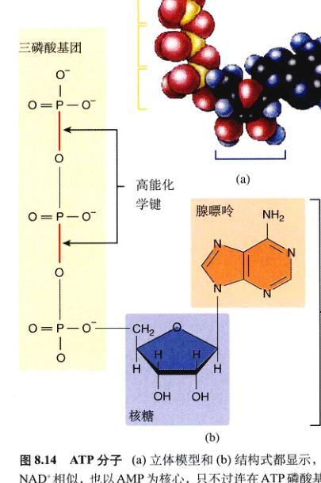
图 8.14 ATP 分子 (a) 立体模型和 (b) 结构式都显示，ATP 与 NAD⁺ 相似，也以 AMP 为核心，只不过连在 ATP 磷酸基团上的并不是另一个核苷酸，而是由两个磷酸形成的短链。在外加的两个磷酸基团之间，以及上述磷酸基团与 AMP 之间的磷酸键，都储存着能量。
Page 14 / 原始页码 148
反应总体上将是放能的，二者都能发生。几乎所有吸能反应需要的能量都小于 ATP 水解释放出的能量，所以 ATP 可以满足细胞大部分能量需要。
磷酸键的不稳定使 ATP 成为高效供能分子的同时，也令它不可能承担长期储存能量的任务，脂肪和糖类能更好地完成这一使命。大多数细胞并不积蓄大量 ATP，任何时刻它们拥有的 ATP 一般只能维持几秒钟的能量供应。ATP 不断地使 ADP 和 Pi 生成。
磷酸键的不稳定使 ATP 成为优越的供能分子。
8.4 细胞生命活动的化学本质——新陈代谢
8.4.1 生化反应途径：新陈代谢的组成单位
有生命的化学，即生物化学就像激素那样通过循环系统叫做新陈代谢 (metabolism，希腊语 metabole，“变化”)。消耗能量来生成或转化化学键的反应通称为合成代谢 (anabolism)；通过化学键断裂而获得其中能量的反应统称为分解代谢 (catabolism)。

图 8.15 一个生化途径 最初的底物与酶 1 发生作用，转变成一种能被酶 2 识别的物质。就这样，反应途径中的每一种酶，都对上一步反应的产物起催化作用。
生物体中含有数以千计不同种类的酶，催化着繁多的反应，许多反应在细胞中顺序发生，称为生化反应途径 (biochemical pathway)。在这种途径中，上一个反应的生成物就是下一个反应的底物 (图 8.15)。生化反应途径是新陈代谢的组成单位，是生物完成有条不紊代谢活动的调控元件。催化生化途径中各步骤的多酶复合物在细胞中特定的位置发生作用，比如柠檬酸循环的各部反应就发生在线粒体内。靠确定催化这些步骤的酶位于何处，我们可以画出一个细胞代谢过程的模。
1) 生化途径的演化
在最早的细胞中，最初的生化反应过程可能牵涉到从周围环境中获取高能有机分子，这些过程所需的绝大部分这类分子被认为存在于原始海洋的“有机物汤”中。最初的催化反应推测是简单的一步反应，只是把这些分子放在一起，成为不同的化合物。最终，外部环境中的高能分子消耗殆尽，只有那些进化出某种机制，可以从环境中别的物质制造这些分子的生物，才能生存下来。以下是设想的反应：
F + G → H
这里两个高能分子 (F 和 G) 反应生成化合物 H，并释放能量。这一反应将由于环境中 F 的耗尽而变得更复杂，因为必须增加一步新的反应，那就是匮乏的 F 由环境中另一种分子 E 生成，反应变为
E → F， F + G → H
随着 E 也逐渐耗尽，能够由可以取得的前体 D 制造 E 的生物活了下来。D 又被耗尽，可以用 C 合成 D 的生物在这一轮中取得竞争优势。于是反应变为
C → D → E → F， F + G → H
这一假想中的生化反应途径在漫长岁月里的演化是缓慢的，它的最后一步反应出现最早，而前面的反应后期才进化出来。在以上的反应途径中，我们说生物从 C 出发经过一系列步骤最终合成 H。这就像是对生物体内生化反应途径的演化历程目前的理解——不是一次完成进化而是分步的，是由后至前的。
2) 生化反应途径的调节
一个生化反应途径要能高效运转，它的活动必须在细胞调节下协调进行。当一种物质已经充足后，就无需继续合成而浪费费可以别处发挥作用的能量和原材料。因此，细胞适时中止某些不再需要生成产物的生化反应途径是有利的。
Page 15 / 原始页码 149
简单生化反应途径的调节常依靠一种精巧的反馈机制：反应途径的终产物与催化第一步反应的酶的变构点结合。在刚才我们设想的反应途径中，催化 C → D 的酶具有一个可供终产物 H 结合的变构点。随着反应的进行，H 在细胞中的含量增加，它结合上这一酶的变构点的几率随之变大。如果 H 正好是这种酶的变构抑制剂，那它与酶的结合便关闭了反应 C → D，关闭这一途径的第一步反应，也就有效地中止了整个反应途径。因此，随着细胞产生越来越多的 H，H 会自动抑制细胞继续生成它的能力。这一调节模型就称为反馈抑制 (feedback inhibition) (图 8.16)。
一个生化反应途径是一系列反应的有机组合，通常作为一个整体来调节。
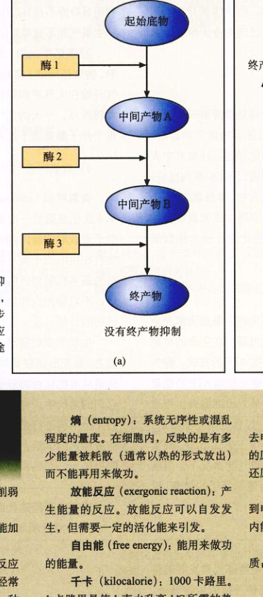
图 8.16 反馈抑制 (a) 一个没有反馈抑制机制的生化途径。(b) 在这一途径中，最后一步反应的产物，成为催化第一步反应酶的变构效应物。换句话说，该途径终产物的生成恰恰中断了这一途径。
新陈代谢词汇
活化能 (activation energy)：用于削弱化学键引发化学反应的能量。
催化 (catalysis)：通过降低活化能加快化学反应速率的过程。
辅酶 (coenzyme)：一种在酶促反应中起辅助作用的非蛋白质有机分子分子，经常充当电子的供体或受体。NAD⁺ 就是一种辅酶。
耗能反应 (endergonic reaction)：必须由外界能源提供能量才能发生的反应，与放能反应相对。
熵 (entropy)：系统无序性或混乱程度的量度。在细胞内，反映的是有多少能量被耗散（通常以热的形式放出）而不能再用来做功。
放能反应 (exergonic reaction)：产生能量的反应。放能反应可以自发发生，但需要一定的活化能来引发。
自由能 (free energy)：用来做功的能量。
千卡 (kilocalorie)：1000 卡路里。1 卡路里是使 1 克水升高 1°C 所需的热量。
新陈代谢 (metabolism)：在一个生活的细胞内或生物体内所进行的化学过程的总和。
氧化 (oxidation)：一个原子或分子失去电子的过程。因为失去的电子必然被别的原子或分子得到，所以它与别的物质的还原过程同时发生。
还原 (reduction)：一个原子或分子得到电子的过程。氧化-还原反应是生物体内能量传递的重要手段。
底物 (substrate)：与酶发生作用的物质，酶促反应最初的反应物。
Page 16 / 原始页码 150
8.4.2 新陈代谢的演化史
随着地球上生命的进化，新陈代谢也发生了巨大变化，尤其是与生物体利用光能合成有机物（合成代谢）和分解有机物获得能量（分解代谢）有关的反应。这两个过程将在下两章中讨论，两者是协同进化的。
1) 降解反应
最原始的生命形式，被认为通过降解非生物合成的有机物获得能量。
生命利用化学键能的能力的出现是新陈代谢演化史上的第一座里程碑。从很早的时候，生物体就开始利用 ATP 的磷酸键储存这些能量，ATP 已成为今天所有生命使用的能量流通货币。
2) 糖酵解
新陈代谢进化中的第二座里程碑是糖酵解——分解糖的反应过程。随着蛋白质发展出各异的催化功能，后通过一系列反应折断有机分子的化学键，获取其中大部分能量便成为可能。比如，细胞通过 10 步系列反应，将六碳糖葡萄糖分解成两个三碳化合物，净获取 2 个 ATP 分子。合成 ATP 的能量来源于断开旧键生成能量较少的新键，能量差转移入 ATP。这一生化途径称为糖酵解 (glycolysis)。
3) 厌氧光合作用
糖酵解之后又一件具有进化意义的大事是厌氧光合作用 (anaerobic photosynthesis) 的出现。在生命的早期历史中，一些生物发展出另一种产生 ATP 的方式，称为光合作用。与糖酵解中靠重组化学键来获取 ATP 的能量不同，这些生物利用光能将质子“泵”出细胞外，用造成的质子浓度梯度来产生 ATP，这一过程称为化学渗透。最开始的光合作用是在缺氧环境下进化的，出缺氧环境下进行得很好。在大气中没有氧气的情况下，溶解在海洋中的 H₂S，作为合成有机物所需原子的来源，这一反应的副产物是单质硫。
4) 固氮作用
固氮作用 (nitrogen fixation) 是新陈代谢发展的第四个主要步骤。蛋白质和核酸这两种关键的生物分子，不可能从光合作用的产物来合成，这是因为它们含有后者缺乏的氮元素。固氮作用就是从 N₂ 中获取氮元素的过程，必须经过断开 N≡N 叁键这一步。这一重要反应进化，同样发生在大气中富含氢元素而无氧气存在的时期。氧气对固氮作用是有毒的，所以今天地球上的固氮也仅仅发生在缺氧环境下，或是某些细菌体内没有氧气的部位。
5) 放氧光合作用
用 H₂O 取代 H₂S 进行光合作用是新陈代谢史上第五件大事，产生氧气的光合作用 (oxygen-forming photosynthesis)，利用 H₂O 而不是 H₂S 作为氢原子和电子的来源，相应地产生氧气而不单质硫。
20多亿年以前，能够进行这种放氧光合作用的小细胞，例如蓝细菌，成为地球上占统治地位的生命形式。氧气开始在大气中积累，这是地球环境发生持续改变的重大转折点。今天的大气中含有 20.9% 的氧气，它们中的每个分子都来源于这种放氧光合作用。
6) 有氧呼吸
有氧呼吸 (aerobic respiration) 是新陈代谢演化史上第 6 次也是最后一次事件，它是通过夺取有机物的高能电子来获取能量的过程。有氧呼吸利用的质子泵与光合作用的质子泵是一样的，所以推测这一过程是对光合作用的基本机制加以修饰后出现的，只不过氢和连带的电子，不是像光合作用那样来自 H₂S 和 H₂O，而是来自有机物的分解。
生物学家们猜想，这种无需 H₂S 而进行光合作用的能力，首先出现在某种紫色非硫细菌中，它们不是从 H₂S 而是从有机化合物分子中取得氢（与紫硫细菌区别）。最终它们的后代中，可能不可避免地出现一部分个体，它们完全不再进行光合作用，而直接靠分解有机物得到能量和氢的供给。这些细菌正是所有真核细胞中线粒体的祖先。
现在推断新陈代谢的演化史发生过 6 次大的变革。
(王希希 陈洪涛 佟向军 译校)
Page 17 / 原始页码 151
小 结
8.1 热力学定律描述了能量的转换
- 能量具有引发变化，使物体克服阻力运动和做功的能力。
- 动能处于做功的活跃状态，势能具有做功的潜能。
- 在一个氧化-还原（氧化）反应中，一个原子或分子的电子被夺去（氧化）转移给别的物质（还原）。
- 热力学第一定律指出宇宙中能量的总量是恒定的，能量既不会消失，也不会被创造。
- 热力学第二定律指出宇宙的无序性（熵）是不断增加的。
- 所有产物比反应物含有更少自由能的反应能自发发生。但自由能的差值大小并不能决定反应的速度。
- 反应的速度取决于用来断开存在的化学键所需活化能的大小。
- 催化作用是通过作用于化学键而降低活化能的过程。
8.2 酶是生物催化剂
- 酶是细胞最主要的催化剂，它们影响反应速度，但不能改变反应物和产物的最终化学平衡。
- 细胞包含许多不同的酶，每一种酶催化一种特定的反应。
- 酶的专一性来源于它的活性中心，只有一种或几种分子适合活性中心的构象。
8.3 ATP 是生命的能量流通货币
- 细胞通过光合作用和氧化有机物获得能量，并将应用于以 ADP 和 Pi 为原料合成 ATP。
- 储存在 ATP 中的能量用来推动吸能反应的进行。
8.4 细胞生命活动的化学本质——新陈代谢
- 大型物质进出细胞通常采取胞吞和胞吐的方式。
- 细胞需要消耗能量改变质膜的形状，以吞入（胞吞）或者吐出（胞吐）临时小泡。
问 题
- 定义氧化反应和还原反应。为什么两者总是一起发生？
- 叙述热力学第一和第二定律。
- 什么是热？什么是熵？什么是自由能？
- 放能反应和吸能反应的区别在哪儿？哪种反应可以自发进行？
- 定义活化能。催化剂如何影响反应物最终转化为产物的比例？
- 酶促反应的速率怎样受温度的影响？其微观原因何在？
- 酶的活性中心与变构中心的区别是什么？
- ATP 分子的哪一部分包含了为大多数细胞反应提供能量的化学键？
- 什么是生化途径？反馈抑制如何调节它的活性？
媒体资源
- 能量转化
- 催化
- 热力学
- 耦联反应
- 技能测验：势能和动能
- 放能反应和吸能反应
- 探索：酶
- 热力学
- 动力学
- 科学家视角：核酶
- “科学”专栏：核糖体是核酶
- ATP
- 反馈抑制